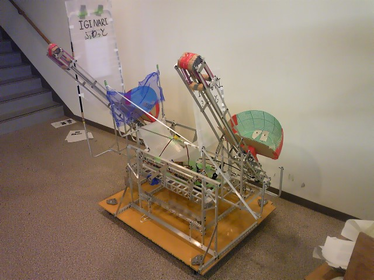

マシン名：IGINARI

今年の競技はオフェンス・ディフェンスの2台のマシンで戦う「ロボ・ボウル」です。
上の画像のはオフェンスマシン「魔王」です。このマシンは歴代ロボコンの
中で最大の2足歩行になります。特徴は極限まで軽く設計した2つの射出機構です。
相手マシンのディフェンスをかわしてボールを届けるためにわざと間隔をあけました。
ここにはついていませんが、自作の回転盤もついていました。（重量オーバーのため試合直前に取り外し（泣））
本番では名取Ａ（この年の全国優勝チーム）とあたり初戦敗退となりましたが、
この大会の中で、最も会場を沸かせた試合を繰り広げました。
このマシンはディフェンスマシン「勇者」です。重量制限8キロ以内という厳しい
制限もありボディはスカスカとなっています。（画像上）しかし、広瀬伝統の曲げ技術
とハニカム構造を使ったフレームでしっかりとした強度を保っています。エアーを使い
2本の釣竿をのばし最大5ｍまで展開します。（画像下）竿の間の
黒いビニールで相手の視界を遮る効果を果たします。
投げ入れられたボールは確実に補球します。